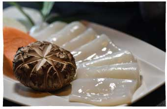

料理
地産地消
大分の旬食材を味わう
豊後牛や新鮮な魚介類、旬のお野菜など
地元大分の特産物や季節の食材を活かした料理をご用意しております。
お部屋にてごゆっくりお召し上がりください。
当館料理長が作る自慢の懐石料理たちとともに、
ゆったりとした至福の時間をお過ごしください。
おすすめの逸品

テキスト
テキストテキストテキストテキストテキストテキストテキストテキスト
テキスト
テキストテキストテキストテキストテキストテキストテキストテキスト
テキスト
テキストテキストテキストテキストテキストテキストテキストテキスト

テキスト
テキストテキストテキストテキストテキストテキストテキストテキスト
テキスト
テキストテキストテキストテキストテキストテキストテキストテキスト
テキスト
テキストテキストテキストテキストテキストテキストテキストテキスト
テキスト
テキストテキストテキストテキストテキストテキストテキストテキスト
よくある質問（料理）
- アレルギー対応は行ってますか？
- できる限りの対応をさせていただきます。しかし、成分やコンタミネーションなどの対応は出来かねる場合がございますので、心配な場合はご予約前にお電話・メールにてお問い合わせくださいませ。
- 夕食は20時過ぎでも対応可能でしょうか？
- 30分くらいの遅れでしたら問題ございません。それ以上遅れてしまう場合は対応が出来かねますので、あらかじめご了承ください。